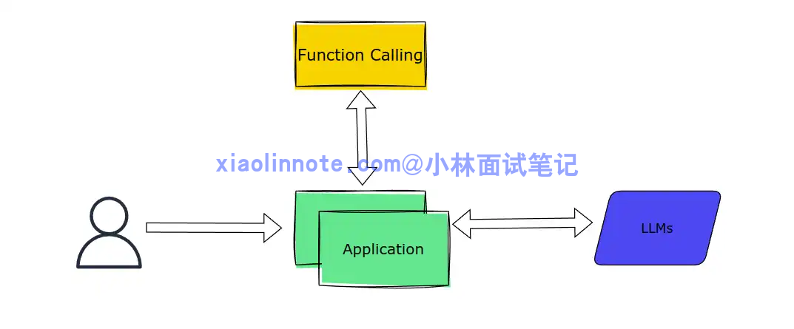
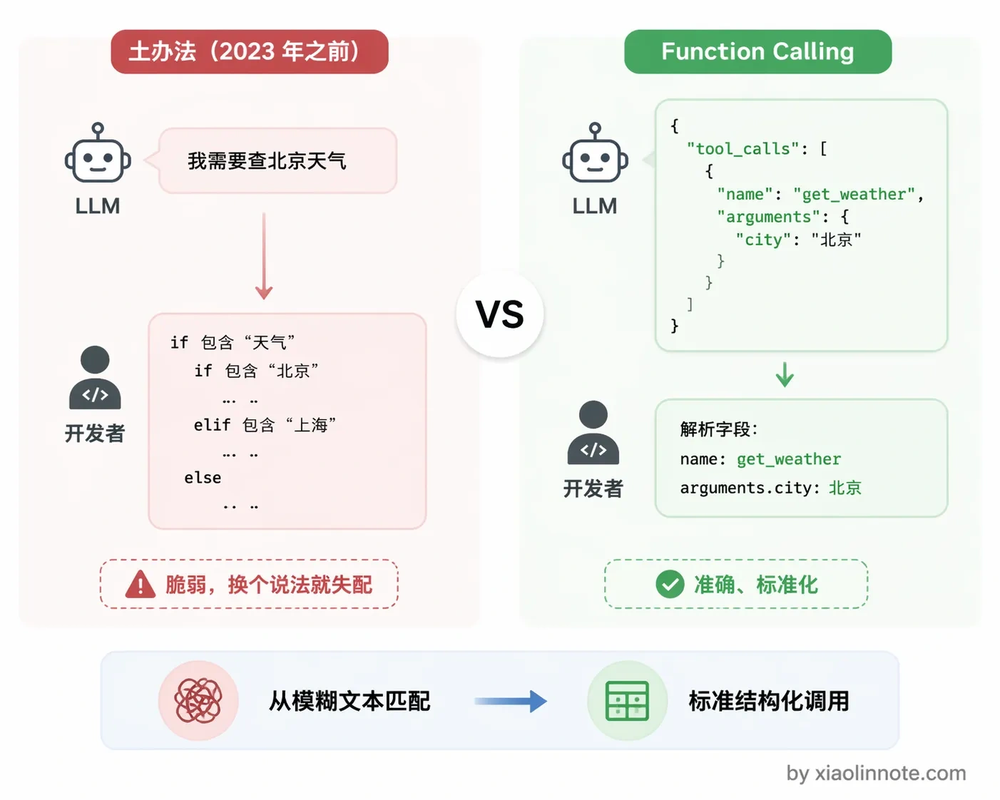
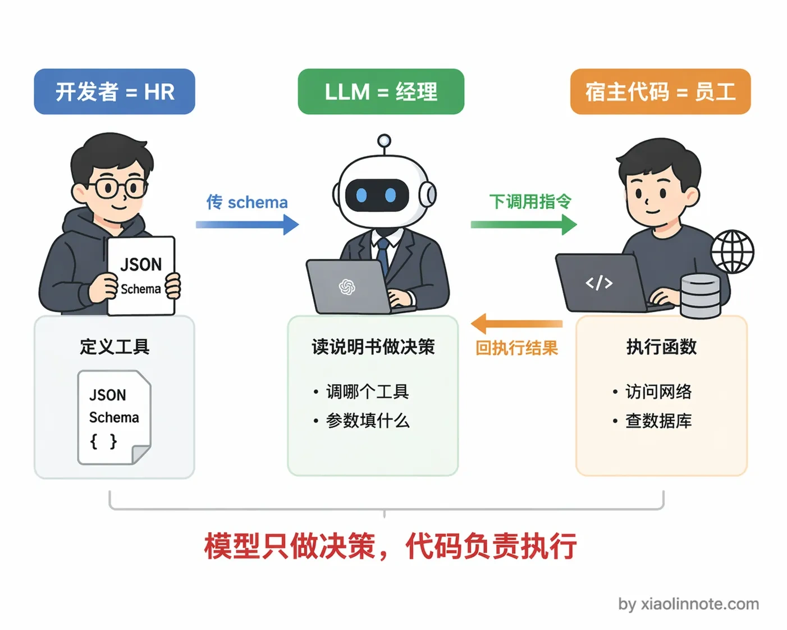
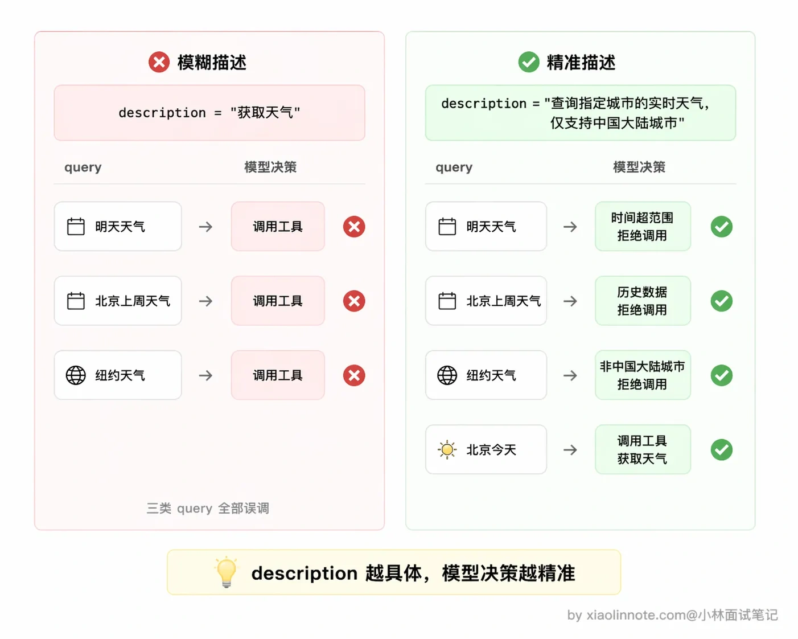
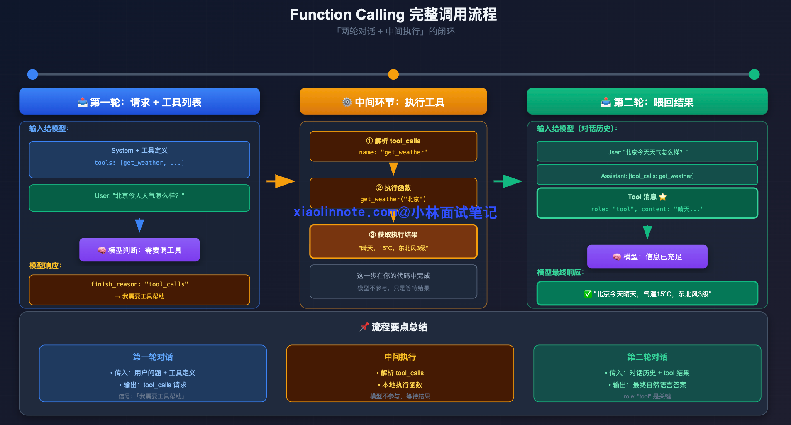
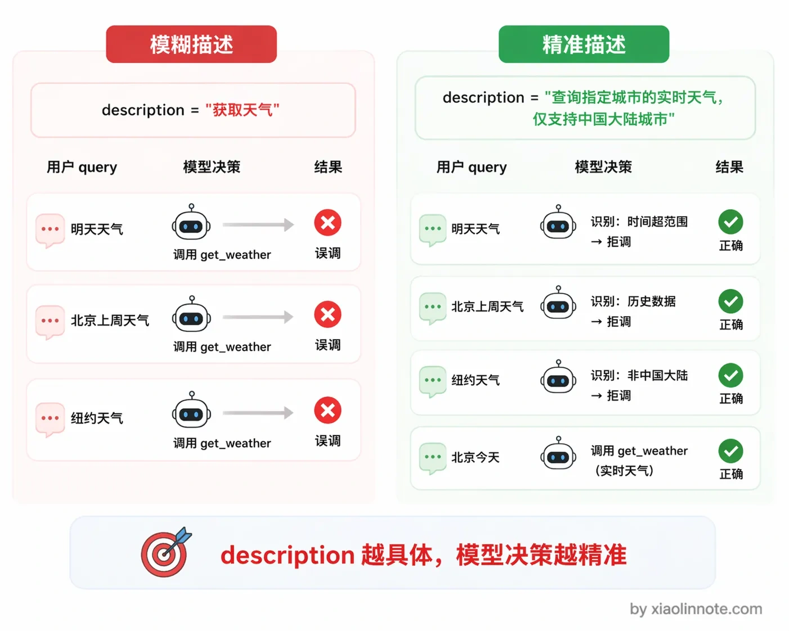
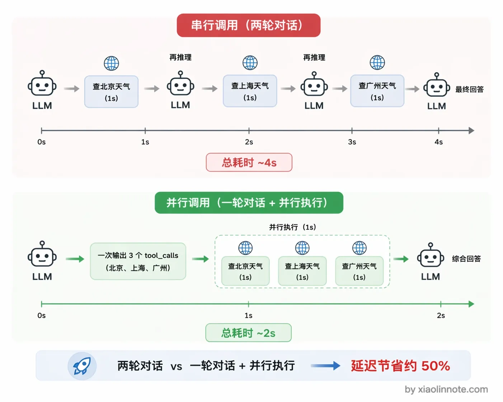
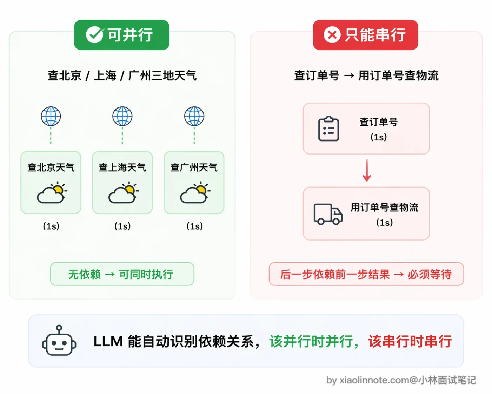

什么是 Function Calling ？原理是什么？
👔面试官：来聊聊 Function Calling 吧，说说它是什么、原理是怎样的？
🙋♂️我：Function Calling 就是让大模型直接调用 API 嘛，模型自己去访问网络、查数据库，然后把结果返回给用户。
👔面试官：模型「自己」去访问网络？你确定？模型有直接执行代码的能力吗？它能联网吗？
🙋♂️我：呃……那应该是模型输出一段调用指令，然后……后端代码去执行？但我记得好像模型输出的就是自然语言，开发者自己解析文本去调用的吧？
👔面试官：你说的那是 Function Calling 出现之前的土办法，靠 if/else 解析自然语言，极其脆弱。Function Calling 的核心就是模型输出结构化的 JSON，而不是自然语言。你连「模型只负责决策、代码负责执行」这个最基本的分工都没搞清楚，工具定义的 schema 怎么写、两轮对话的流程是什么、并行调用怎么做，这些都回去好好看看吧。
好，这段面试踩的雷还挺典型的，很多人一上来就把「模型决策」和「代码执行」搞混了。下面我把 Function Calling 的完整机制拆开讲清楚。
💡 简要回答
Function Calling 我的理解是这样一套机制：开发者用 JSON schema 把工具描述好传给模型，模型判断需要调工具的时候不输出自然语言，而是直接输出一段结构化的 tool_calls JSON，告诉你「我要调哪个函数、参数是什么」，你的代码拿到这段 JSON 去真正执行，把结果塞回对话，模型再生成最终答案。
整个流程本质上是两轮对话：第一轮模型说「我需要调这个工具」，你去执行，第二轮模型拿到执行结果说「答案是这个」。
我觉得最核心的设计是，模型全程只做决策，执行的事情一律由宿主代码完成，职责分得很清楚。
📝 详细解析
背景，Function Calling 解决了什么问题
LLM 在没有 Function Calling 之前，想让模型帮你调工具，完全靠解析自然语言。模型输出「我需要查一下北京的天气」，你再写 if/else 判断它「说」的是要查天气，然后手动去调 API。这个做法极其脆弱，模型换个说法，你的 if/else 就失配了，也根本没办法标准化。

Function Calling 的出现把这件事固定下来了：模型不再「说」要调工具，而是直接输出一段结构化的 JSON，开发者按格式解析就行，准确率大幅提升，也有了统一标准可以对接。这套机制由 OpenAI 在 2023 年推出，现在 Claude、Gemini、Qwen 等主流模型都支持。

三个角色，把 Function Calling 理解成一场任务委托
理解 Function Calling 的关键是搞清楚谁做什么。可以把这套流程理解成一场「任务委托」：

开发者是 HR，负责给每个工具写「职位说明书」，就是 JSON schema，告诉模型「我们有哪些工具、每个工具能做什么、需要哪些参数」。模型是经理，读完说明书之后决定「这个任务需要调哪个工具、参数填什么」，然后把指令下达出来。你写的代码是员工，真正去跑函数、访问网络、查数据库，把结果汇报回来。
关键点：模型全程只是在「下指令」，它不亲自执行任何代码，也没有直接访问网络的权限。执行的事一律由宿主程序代码完成，这个分工要想清楚。
工具定义，schema 的每个字段都有含义
工具 schema 就是一份结构化的「工具说明书」，用 JSON 格式写，告诉模型这个工具叫什么、能做什么、需要哪些参数。
tools = [
{
"type": "function",
"function": {
"name": "get_weather", # 工具的唯一标识，模型输出 tool_calls 时会用这个名字
"description": "查询指定城市的实时天气，包含气温、天气状况、风向风速，仅支持中国大陆城市",
"parameters": {
"type": "object",
"properties": {
"city": {
"type": "string",
"description": "城市名称，如「北京」「上海」，不要带省份前缀"
},
"unit": {
"type": "string",
"enum": ["celsius", "fahrenheit"],
"description": "温度单位，默认用摄氏度"
}
},
"required": ["city"]
}
}
}
]
其中最关键的字段是 description。这里停一下，你想一个问题：如果 description 写得含糊，模型会怎么表现？答案是它会「瞎猜」，比如你只写「获取天气」，模型可能拿到一个带英文名的城市也照样调，拿到「这周天气如何」这种时间跨度不对的问题也硬往里塞，调完之后发现返回的数据根本对不上。模型在决定「要不要调这个工具、参数怎么填」的时候，能依赖的唯一依据就是这段描述。
你可以对比一下：「获取天气」和「查询指定城市的实时天气，包含气温、天气状况、风向风速，仅支持中国大陆城市」，对模型判断准确率的影响差距是很明显的。写得越清晰，模型的选择越准确。参数的 description 同理，格式要求、示例值、限制条件都要写进去，模型才能正确填写参数。

完整的调用流程，两轮对话加中间执行
Function Calling 的运行时本质上是「两轮对话 + 中间执行」的闭环。

第一轮，你把工具列表和用户的问题一起传给模型。模型读完之后，如果判断需要调工具，就不直接输出最终答案，而是输出一个 finish_reason 为 "tool_calls" 的响应，里面包含要调用的工具名和参数，这是个明确信号，告诉你「我需要工具帮助，还没准备好给答案」。
拿到这个信号之后，中间环节就交给你的代码了。你的代码解析 tool_calls 拿到函数名和参数，找到对应的函数跑一下，拿到执行结果。
然后进入第二轮，把工具执行结果以 role: "tool" 的消息塞回对话历史，再次调用模型。这次模型有了工具结果，有了充分信息，才给出最终的自然语言答案。

import openai, json
client = openai.OpenAI()
messages = [{"role": "user", "content": "北京今天天气怎么样？"}]
# 第一轮：把工具定义和问题一起传给模型
response = client.chat.completions.create(
model="gpt-4o",
messages=messages,
tools=tools,
tool_choice="auto" # auto 让模型自己判断要不要调，也可以设 required 强制调
)
msg = response.choices[0].message
if msg.finish_reason == "tool_calls": # 模型要调工具，还没给最终答案
tool_call = msg.tool_calls[0]
func_args = json.loads(tool_call.function.arguments) # {"city": "北京"}
# 中间执行：你的代码真正去跑函数
result = f"{func_args['city']}今天晴，15°C，东北风 3 级"
# 第二轮：把工具结果塞回对话，再问一次模型
messages.append(msg)
messages.append({
"role": "tool",
"tool_call_id": tool_call.id, # 和 tool_calls 里的 id 对应
"content": result
})
final = client.chat.completions.create(model="gpt-4o", messages=messages, tools=tools)
print(final.choices[0].message.content)
# 输出：北京今天天气晴朗，气温 15°C，东北风 3 级，适合外出。
并行工具调用
看完单个工具的流程，再来想一个问题：如果用户一口气问了好几件事，比如「帮我查北京、上海、广州三个城市的天气」，模型一次该调一个工具，还是可以同时调多个？这就要说到 Function Calling 的并行调用设计。
当用户的问题需要多个工具才能回答时，模型可以在一次响应里同时输出多个 tool_calls，tool_calls 是个列表，不只有一条。比如用户问「帮我查北京和上海的天气」，模型会一次返回两个调用请求，分别对应两个城市。
为什么要这么设计？你想一下，如果没有并行调用，模型先说「我要查北京天气」，你执行完喂回去，模型再说「我要查上海天气」，又一轮对话，这样两个工具串行要跑两轮，每一轮都有一次模型推理和一次工具执行的延迟，总耗时很长。有了并行调用，模型一次把两个调用请求都输出来，你的代码可以同时执行这两个工具（比如用 Python 的 asyncio.gather 或者多线程），拿到所有结果后一次性塞回对话，再调一次模型就拿到综合了多个工具结果的最终答案。整个过程从「两轮对话」压缩成了「一轮对话 + 并行执行」，总耗时大幅降低。

不过要注意一点，并行调用的前提是这几个工具之间没有依赖关系。
查北京天气和查上海天气互不影响，可以并行；但如果是「先查用户的订单号，再用订单号去查物流」，第二个调用依赖第一个的结果，这种就只能串行，模型也会正确地分两轮来输出。

🎯 面试总结
回头看开头的面试对话，踩的雷其实很典型。
第一个误区是以为模型能「自己」去访问网络、执行代码，这是对 Function Calling 最常见的误解。面试时一定要强调：模型全程只负责决策，输出结构化的 JSON 调用请求，真正执行工具的是你的宿主程序代码，这个职责分工是整个机制的核心设计。
第二个误区是把 Function Calling 和之前靠解析自然语言调工具的「土办法」搞混了，Function Calling 的关键改进就是模型直接输出结构化 JSON 而非自然语言，让工具调用有了统一标准。
面试回答这道题，有几个点必须说到：工具定义用 JSON schema 描述，description 字段是模型判断是否调用的核心依据；运行时是「两轮对话 + 中间执行」的闭环流程；模型通过 finish_reason 为 tool_calls 来明确告知需要工具帮助；以及模型支持一次返回多个 tool_calls 实现并行调用。
把这几个点讲清楚，再强调「模型决策、代码执行」的分工原则，这道题就稳了。